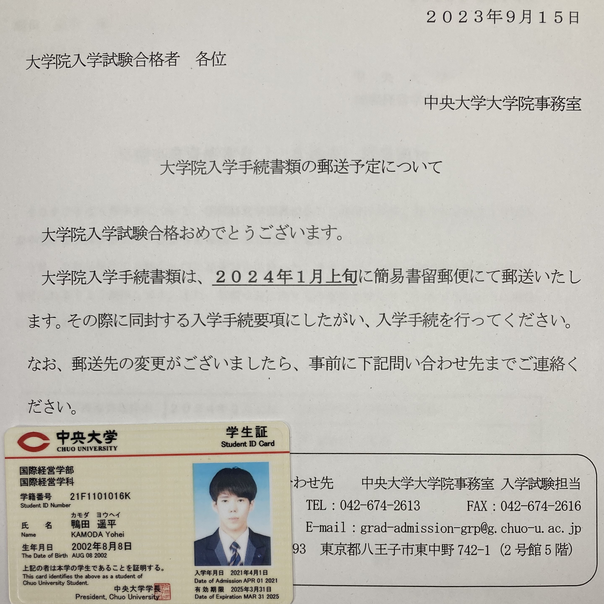
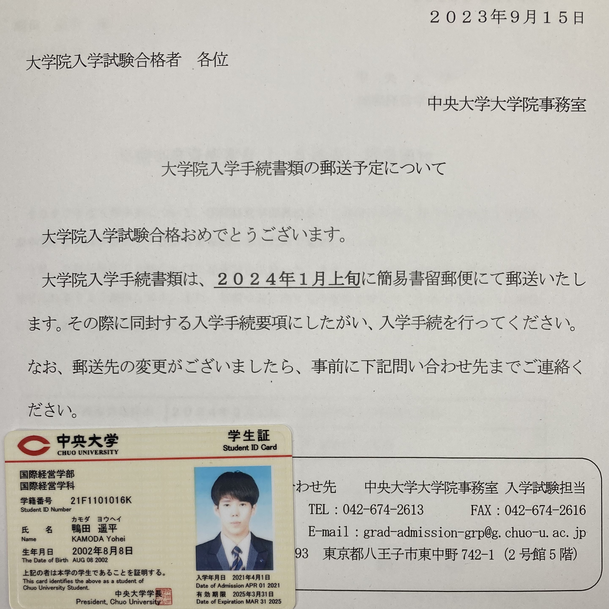

学業活動
『大学生』の１つのロールモデル - 知の探究
 

国際経営学部初の早期卒業と大学院合格
各種セミナー、講演会への参加
私は国際経営学部初の早期卒業生となり、大学院にも合格することができました。
課内活動でも良い成績を収めつつ、3年で学部を卒業するということを実現しました。
就職のための大学といった世間の風潮の中で、本来の知の探究を目指して大学院へのステップアップを目指しました。
株式会社3R様の協力の元、循環バリューチェーンコンソーシアムに参加し、
カーボンニュートラル社会の実現やバリューチェーンの循環に対する知見を深めました。
また、任意参加である早稲田大学オープンイノベーションフォーラムに参加するなど、積極的に学びを深めました。
＜株式会社3R様に提出した報告書＞
循環バリューチェーンコンソーシアム - セミナー報告書
早稲田大学オープンイノベーションフォーラム2023 報告書